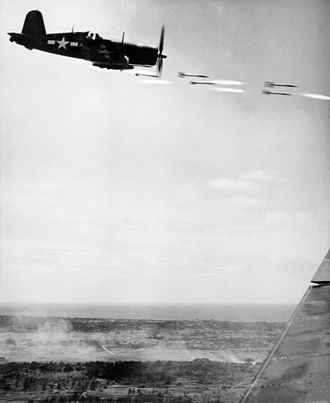
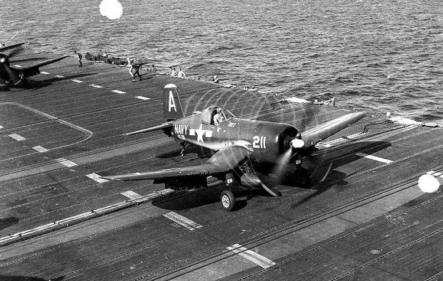
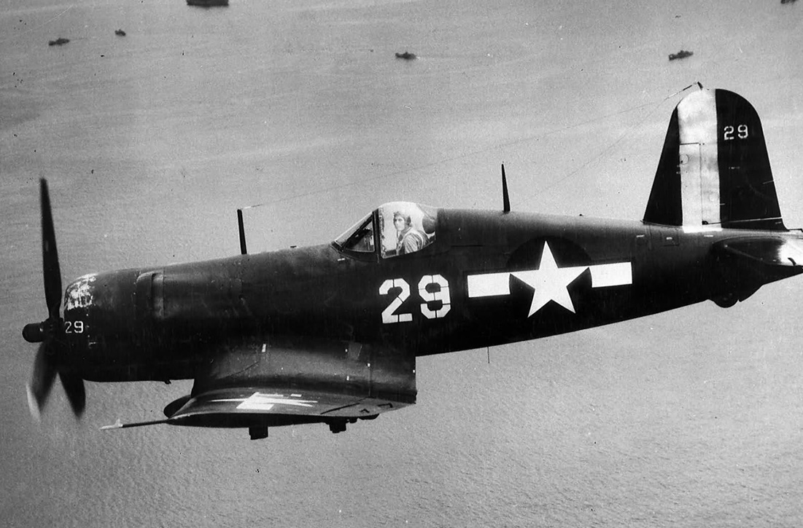
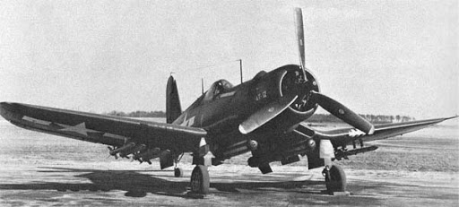
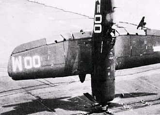
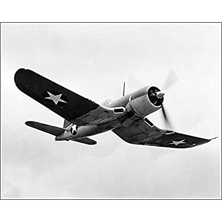
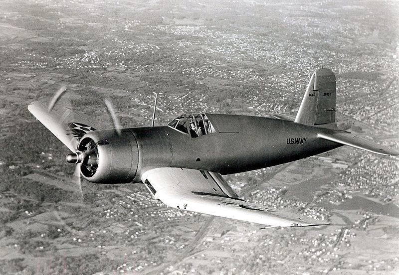

Чанс-Воут F4U «Корсар» (англ. Chance Vought F4U Corsair) — одноместный палубный истребитель времён Второй мировой войны. Спроектирован и строился фирмой Chance Vought, а также Goodyear Aircraft (палубная модификация FG-1 для флота).
В 1938 году Военно-морские силы США объявили конкурс на палубный истребитель нового поколения, победу в котором одержала фирма Чанс-Воут. С фирмой был заключён договор на постройку прототипа нового самолёта в июне 1938 года.
Большинство технических решений в конструкции «Корсара» продиктовано требованиями военных к скоростным характеристикам самолёта. Чтобы обеспечить ему высокую горизонтальную скорость полета, машину снабдили 2000-сильным радиальным двигателем воздушного охлаждения и четырёхлопастным воздушным винтом увеличенного диаметра.
Это породило ряд трудностей, повлекших за собой довольно нестандартные решения. Чтоб обеспечить самолёту нужную безопасность при посадке, «Корсар» снабдили крылом схемы «обратная чайка», что позволило сократить длину стоек шасси, не жертвуя при этом расстоянием от винта до палубы. Также воздушный винт увеличенного диаметра создавал значительный реактивный момент. Чтобы компенсировать его, конструкторам пришлось развернуть киль самолёта на 2 градуса влево от центральной оси фюзеляжа.
Было сконструировано сильно изогнутое складывающееся крыло типа «обратная чайка», основные стойки убирающегося шасси были расположены в месте излома крыла. 29 мая 1940 года лётчик Лаймен Бьюльярд совершил пробный полёт. На «Корсаре» впервые в авиастроении США была применена точечная электросварка. 3 июня 1941 года ВМС подписали с фирмой контракт на поставку 580 самолётов этого типа.
Но результаты палубных испытаний оказались неудовлетворительными, командование флота признало «Корсар» непригодным для использования в качестве палубного истребителя. В результате пришлось изменить конструкцию шасси и поднять кабину пилота для улучшения обзора.
Первая боевая эскадрилья ВМС США VF-12 была сформирована в октябре 1942 года. Эти истребители стали выпускаться компаниями Brewster под обозначением F3A-1 и компании Goodyear под обозначением FG-1. У последней модификации крыло не было складывающимся.
F4U-2
Попытка превратить F4U-1 Corsair в палубный ночной истребитель. Самолёт был вооружен пятью 12.7-мм пулемётами — один пулемёт был убран с правого крыла и вместо него установлен радар Airborne Intercept (AI), закрытый обтекателем. Так как компания Vought была загружена другими более важными проектами, то в F4U-2 переоборудовали только 32 самолёта, находящихся на заводе Naval Aircraft Factory, и два F4U-1 из фронтовых частей. Эти самолёты использовала в начале 1944 года эскадрилья VF-101 на борту USS Enterprise и USS Intrepid, а также эскадрилья VF-75 на Соломоновых Островах и VMF-532 на Тараве.
Корсары» дебютировали в бою в феврале 1943 года на острове Гуадалканал в составе эскадрильи морской пехоты VMF-124. Первые боевые вылеты были совершены 14 февраля на сопровождение бомбардировщиков B-24 и оказались неудачными: «Корсары» одержали одну воздушную победу (в результате столкновения с японским истребителем) при потере 2 самолётов. Несмотря на неудачный дебют, за два месяца боёв эскадрилья сбила 68 японских самолётов при потере 11 своих.
«Корсары» приняли участие во всех крупных операциях на Тихом океане начиная с середины 1943 года — боевых действиях на Гуадалканале, боях за Соломоновые острова, рейдах на Рабаул, сражении в заливе Лейте, освобождении Филиппин, сражении за остров Окинава, заключительных налётах на Японию. А также этот самолёт вместе с «Лайтнингом» и «Хеллкетом» взял превосходство над A6M «Zero».
Высокие характеристики, прекрасная боевая живучесть и мощное вооружение обусловили рекордное для ВМС США соотношение сбитых и потерянных самолётов. В последний год войны соотношение побед и потерь составляло 12:1 в боях с A6M, 7:1 в боях с Ki-84, 13:1 в боях с N1K-J и 3:1 в боях с J2M. Стоит заметить, что к началу активного боевого применения «Корсаров» американцами, японцы уже потеряли практически всех опытных пилотов и асов, а японская промышленность не могла обеспечить качественными самолётами армию и флот, что, впрочем, не умаляет выдающихся ЛТХ самолёта. За всю войну F4U совершили 64 051 боевой вылет, сбив 2140 самолётов противника и сбросив 15 621 тонну бомб. Потери составили 1624 самолёта, в том числе:
- в воздушных боях — 189
- от зенитного огня — 349
- потери в боевых миссиях — 230
- небоевые потери в воздухе — 692
- потери на земле и на авианосцах — 164
В результате большого количества небоевых потерь «Корсары» имели один из самых низких коэффициентов отношения сбитых к потерянным — 1,32, что значительно хуже, чем у «Хеллкэтов» — 2,1. К тому же низкий процент боевых потерь следует отнести не столько к выдающимся летно-техническим данным самолёта, сколько к изменениям в тактике воздушного боя американских летчиков.
Начиная с середины 1942 года пилоты ВМС США стали применять тактику «бей и беги», что полностью исключало маневренный бой и нивелировало преимущество японских «Зеро» в горизонтальном манёвре.
Также из-за сложности в посадке самолёта на авианосец, вызванных особенностями конструкции, Корсары получили прозвище «Убийца новичков».
Самолётов первой серии было выпущено 758 штук, после чего последовал целый ряд различных его модификаций, завершившийся уже в 1951 году. Всего было выпущено около 12 500 самолётов.
Самолёт являет собой пример рекордного долголетия — он серийно выпускался в течение 11 лет, состоял на вооружении двух десятков стран, причём в Сальвадоре, Никарагуа и Аргентине его сняли с вооружения только в начале 1970-х годов.
«Корсар» показал себя неплохим штурмовиком. Он брал на борт две 454-кг бомбы или напалмовых бака такой же массы и восемь 127-мм ракет HVAR. В ходе боёв на Окинаве он был основным самолётом непосредственной поддержки наземных войск. После Второй мировой войны он активно использовался ВМС и Корпусом морской пехоты в Корейской войне.
|  |
|  |
|  |
|  |
|  |
|  |
|  |